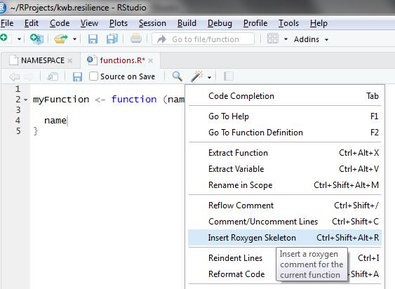
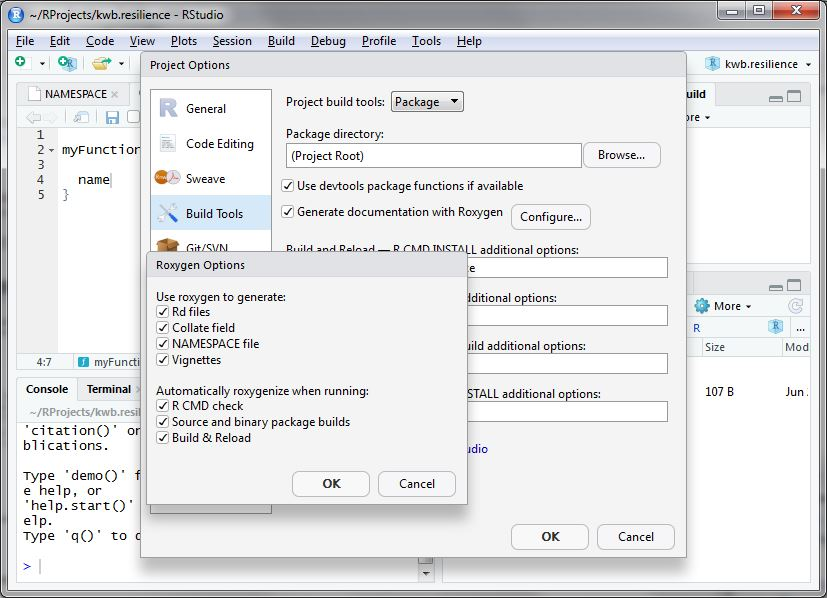
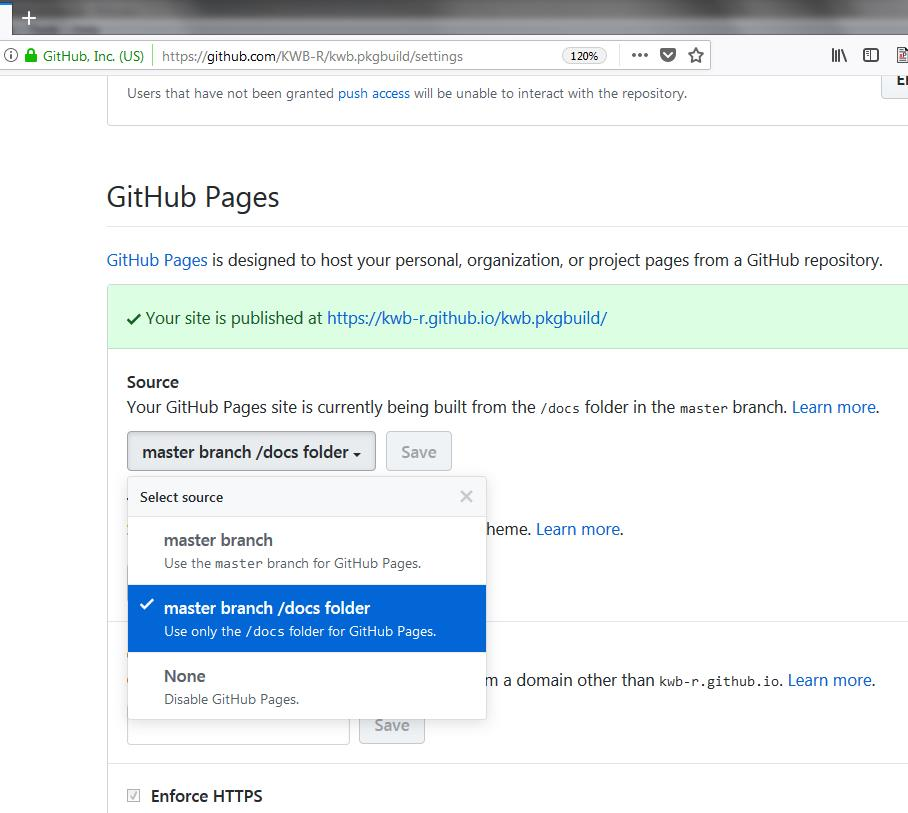

This tutorial explains how you can develop an R package that already follows a predefined default KWB package style. For example, a DESCRIPTION file will be generated for you. This file already contains some information that we want to have in all our packages, such as KWB being the copyright holder of the package.
1 Install required R packages
First you need to install the following required R packages:
# Get the names of already installed packages
installed_packages <- rownames(installed.packages())
# Install missing packages from "https://cloud.r-project.org"
# - remotes: functions for installing an R package from Github
# - pkgdown: functions for creating a package website
for (package in setdiff(c("remotes", "pkgdown"), installed_packages)) {
install.packages(package, repos = "https://cloud.r-project.org")
}
#Sys.setenv(GITHUB_PAT = "mysecret_access_token")
install.packages("remotes", repos = "https://cloud.r-project.org")
remotes::install_github("r-lib/remotes@18c7302637053faf21c5b025e1e9243962db1bdc")
# Install latest version of this package from our GitHub account
remotes::install_github("KWB-R/kwb.pkgbuild")2 Configure and create your package
Secondly you need to personalise your R package by adapting a default template that we provide for KWB packages. This template is contained in the R package kwb.pkgbuild.
2.0 Prepare a package directory
In the best case, your package will be under version control. We encourage you to create a GitHub repository on our GitHub account that represents the package. Having a package as a repository on GitHub has the advantage that it can be easily installed directly from there with no more than running devtools::install_github("kwb-r/<package_name>"). Once you have created the GitHub repository, clone it to a folder on your local machine.
You can let RStudio do the cloning for you. Therefore,
- select “File > New Project…” from the main menu,
- select “Version Control > Git”,
- set “Repository URL” to your new repository, such as
https://github.com/kwb-r/<package_name>, - set “Project directory name” to your
<package_name>(this should be the default), - set “Create project as subdirectory of” to the folder in which you want to store your local copies of your github repositories, e.g. to
~/github-repos.
For the steps described in the following, use the created package folder instead of temp_pkg so that your package template will be created direcly in the correct location.
2.1 Create empty R package
# Set the name for your new package
package <- "kwb.newpackage"
# Set the path to your new package
pkg_dir <- file.path(tempdir(), package)
# Create directory for R package
kwb.pkgbuild::create_pkg_dir(pkg_dir)
#> [1] "/tmp/Rtmpbbbtuw/kwb.newpackage is a valid 'root_dir' for pkg 'kwb.newpackage'"
#> [1] "/tmp/Rtmpbbbtuw/kwb.newpackage"
# Create a default package structure
withr::with_dir(pkg_dir, {kwb.pkgbuild::use_pkg_skeleton(package)})
#> ✔ Setting active project to '/tmp/Rtmpbbbtuw/kwb.newpackage'
#> ✔ Writing 'kwb.newpackage.Rproj'
#> ✔ Adding '.Rproj.user' to '.gitignore'2.2 Parameterise your R package
In the following, we present the commands required to setup and create your new package. We suggest that you write the corresponding code into a .R script file (e.g. setup_package.R). Once the package is created, we suggest to put the script file into the inst/extdata folder of your package. This makes the creation of the package reproducible and can be used as a template for the creation of further packages.
2.2.2 Package description
The package description needs three entries
name: name of the package
title: title of your R package (which is automatically converted to title case with the function
tools::toTitleCase())desc: package description. Should be at least one sentence long and needs to end with a period!
2.3 Create R package structure in KWB-R style
Running the following code not only creates an R package structure but also adds some KWB-R specfic styling, e.g.:
-
Adding configution files for:
Continous integration on windows (https://appveyor.com) and linux (https://travis-ci.org/KWB-R)
Code coverage in R package using the servive codecov.io
Backup of Github repositories on our mirrored KWB-R group on Gitlab
Indicates the current lifecycle of the R package according to https://www.tidyverse.org/lifecycle/
Uses by default the permissive
 for all public R packages currently hosted on Github (see: http://kwb-r.github.io/status/) and lists KWB as copyright holder (see e.g. here)
for all public R packages currently hosted on Github (see: http://kwb-r.github.io/status/) and lists KWB as copyright holder (see e.g. here)Creates
READMEfiles (README.RmdandREADME.md) for the above mentioned topics andPrepares a KWB-R flavored documentation website template named
_packagedown.ymlneeded by http://pkgdown.r-lib.org/
Running the following R function will create the R package with the version = 0.0.0.9000 and development stage experimental (defined here).
2.4 Add your R functions
Add your R functions in the folder R/. By using usethis::use_r with the parameter name = function an empty R script is already stored in the right folder R/.
For writing your R code/functions please follow the tidyverse coding style (https://style.tidyverse.org/), which serves as our default KWB-R style.
Now you just need to fill it with content (i.e. your functions) and document it using roxygen2. If you have already defined a function you can add a roxygen2 skeleton by using clicking on the Insert Roxygen Skeleton button in RStudio as shown below.

More information on documentation in R is provided here: http://r-pkgs.had.co.nz/man.html
3 Check your package
Once you completed all the steps above go to the upper right panel in RStudio and click on Build -> More -> Configure build tools as shown below.

Then click on Configure and a new window opens. Here you select everything as shown below:

After doing so accept the settings by two times clicking Ok.
Subsequently click the Check button so that your package is cross-checked for possible problems (e.g. wrong documentation, missing package dependencies).
In case of missing package dependencies as shown below these should be added to the DESCRIPTION file.
Namespace dependencies not required: 'fs' 'httr' 'stringr' 'usethis' 'yaml'
See section 'The DESCRIPTION file' in the 'Writing R Extensions'
manual.
* DONE
Status: 1 ERROR
See
'C:/Users/myname/Documents/RProjects/kwb.pkgbuild.Rcheck/00check.log'
for details.
checking package dependencies ... ERROR
Namespace dependencies not required: 'fs' 'httr' 'stringr' 'usethis' 'yaml'This can be done using the function usethis::use_package() as shown below:
pkg_dependencies <- c('fs', 'httr', 'stringr', 'usethis', 'yaml')
sapply(pkg_dependencies, usethis::use_package)
✔ Adding 'fs' to Imports field in DESCRIPTION
● Refer to functions with `fs::fun()`
✔ Adding 'httr' to Imports field in DESCRIPTION
● Refer to functions with `httr::fun()`
✔ Adding 'stringr' to Imports field in DESCRIPTION
● Refer to functions with `stringr::fun()`
✔ Adding 'usethis' to Imports field in DESCRIPTION
● Refer to functions with `usethis::fun()`
✔ Adding 'yaml' to Imports field in DESCRIPTION
● Refer to functions with `yaml::fun()`Subsequently you should re-click on the Check button again and it should finish without errors.
4 Build your package
Now you are ready for building your R package by clicking on the Install and Restart button. A successful installation should finish with Done as shown below:
5 Document your package
5.1 Manually
Finally you should run pkgdown::build_site() in order to create an documentation website for your R package. Running this command will store the website in the subfolder docs within your R package.
Once you upload your R package to Github this can be easily used as documentation page that you define in the settings page for your R package which is available at:
https://github.com/KWB-R/ kwb.mycoolrpackage /settings

5.2 Automatically
In case you have already a Github repo defined for your R package you can also automate the process of updating the pkgdown::build_site() by with the wrapper function kwb.pkgbuild::use_autopkgdown(), which:
creates a new branch “gh-pages” where the documentation site is deployed
sets “docs” folder to “.gitignore” (as these files are now build on Travis)
-
prepares Travis-CI by:
adding secret key with
travis::use_travis_deploy()creating “.travis.yml” with
kwb.pkgbuild::use_travis(auto_build_pkgdown = TRUE)creating an empty “gh-pages” branch with
kwb.pkgbuild::create_empty_branch_ghpages()
Finally to need to go to:
https://github.com/KWB-R/ kwb.mycoolrpackage /settings
and set the “source” for Github Pages to the branch “gh-pages”. After each successful Travis build the documentation website is now also updated!